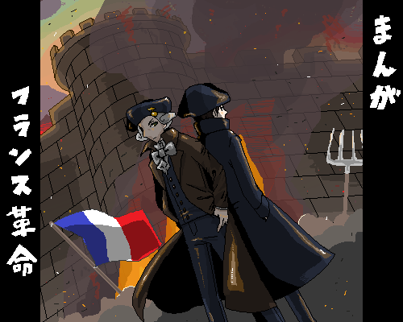

|
月刊コミックニート |
【学習まんが】まんがフランス革命

読者様から頂きました
読者様から頂きました
第一部「アンシャン・レジームの崩壊」
第一話「革命前夜」
第二話「三部会開催」
第三話「テニスコートの誓い」
第四話「バスティーユ襲撃（前編）」
第五話「バスティーユ襲撃（後編）」
第六話「人権宣言」
第七話「ジャコバン・クラブ」
第八話「ヴァレンヌ事件（前編）」
第九話「ヴァレンヌ事件（後編）」
第十話「フイヤン・クラブ」
第十一話「シャン・ド・マルスの虐殺」
第十二話「ピルニッツ宣言」
第十三話「祖国は危機にあり！」
第十四話「八月十日」
第十五話「国王裁判」
登場人物紹介（第一部）
第二部「ジャコバン派の独裁」
第十六話「恐怖政治」
第十七話「ジャコバン独裁」
第十八話「ジロンド粛清」
第十九話「ツーロンの攻防（前編）」
第二十話「ツーロンの攻防（後編）」
第二十一話「ジャコバン内紛」
第二十二話「粛清の嵐」
第二十三話「最高存在の祭典」
第二十四話「テルミドール九日（前編）」
第二十五話「テルミドール九日（中編）」
第二十六話「テルミドール九日（後編）」
登場人物紹介（第二部）
第三部「ナポレオンの栄光」
第二十七話「テルミドリアン」
第二十八話「ヴァンデミエールの反乱」
第二十九話「総裁政府」
第三十話「イタリア戦役」
第三十一話「バブーフの陰謀」
第三十二話「エジプト戦役」
第三十三話「ブリュメール十八日（前編）」
第三十四話「ブリュメール十八日（後編）」
最終話「革命の終焉」
登場人物紹介（第三部）
外伝
外伝の手引き
外伝「ヴァルミーの勝利」
（１）
外伝「ヴァンデの聖戦」
（１） （２） （３）
登場人物紹介（外伝）